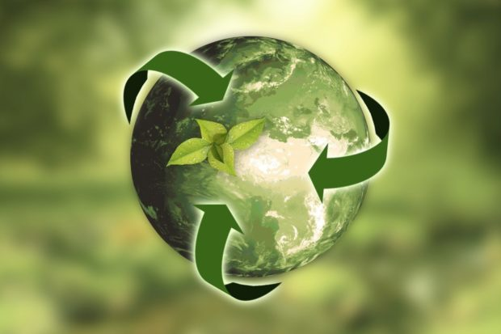
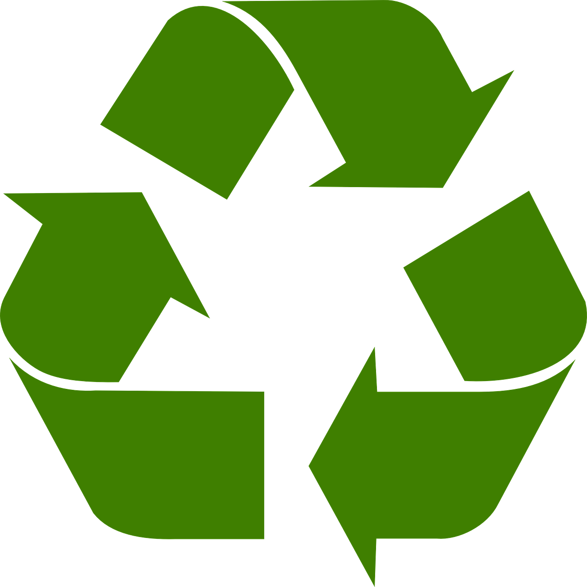
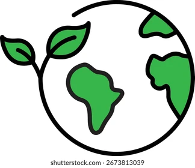
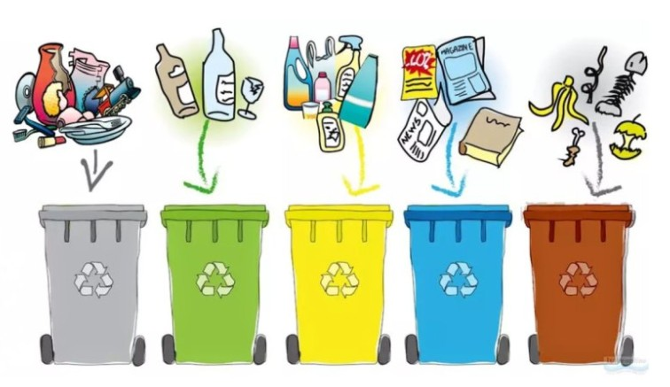
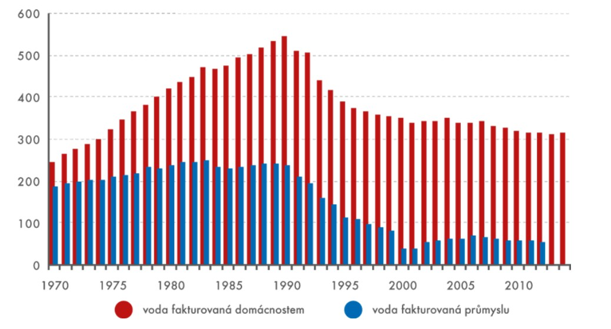
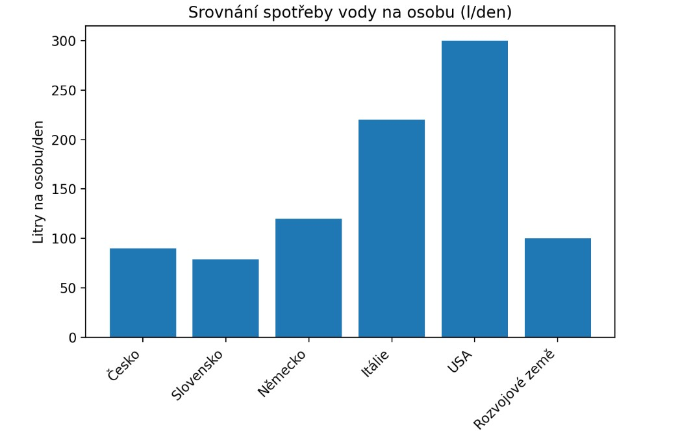
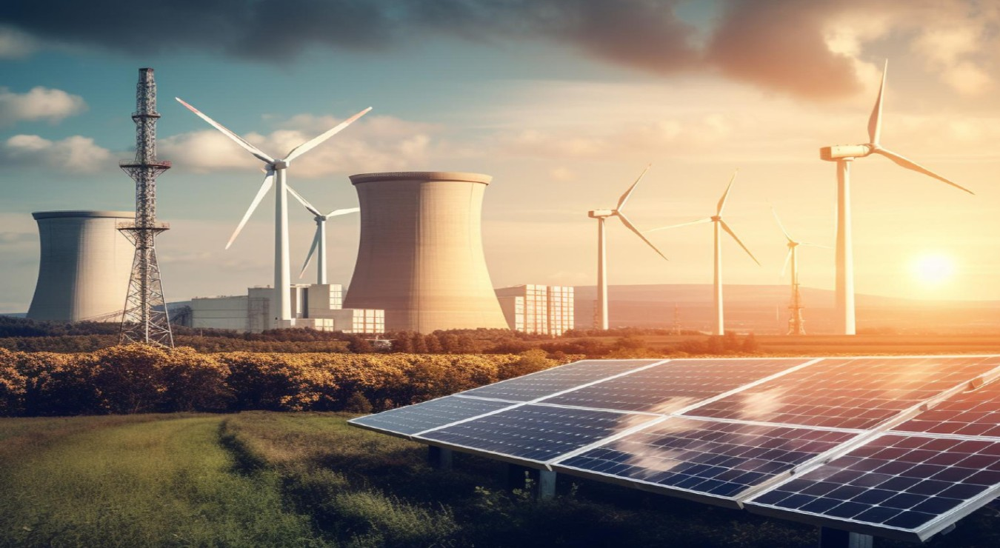
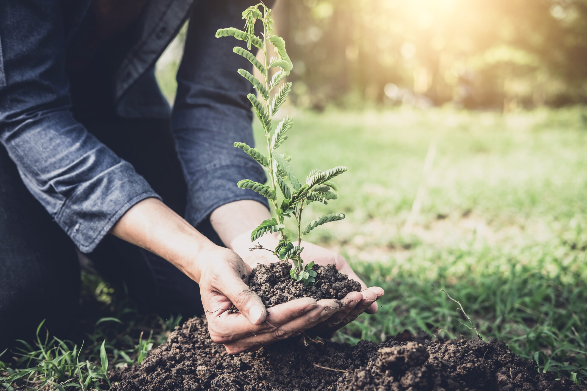

Článek
Proč je rovnováha v přírodě klíčová?
Ekologie je vědní obor, který se v posledních desetiletích stal jedním z nejdůležitějších témat lidstva. Nejde jen o třídění odpadu, ale o hluboké porozumění tomu, jak spolu všechny živé organismy a jejich prostředí souvisejí. Pokud se jedna část tohoto složitého systému naruší, má to dopad na vše ostatní - včetně člověka.
Co je to vlastně ekologie?
Pojem ekologie pochází z řeckých slov oikos (dům) a logos (věda). Doslova je to tedy „věda o domově“. Zkoumá vztahy mezi organismy (rostlinami, zvířaty, lidmi) a jejich neživým okolím (vodou, vzduchem, půdou).
Odborníci se nezaměřují pouze na jednotlivé druhy, ale na celé ekosystémy. Příkladem může být les, kde stromy produkují kyslík, hmyz opyluje rostliny, šelmy regulují počty býložravců a mikroorganismy v půdě rozkládají odumřelou hmotu. Vše funguje v dokonalé, ale křehké rovnováze.
Vendula Pazourová, 6. 5. 2026

Článek
Proč je ekologie důležitá?
Důležitost ekologie spočívá v tom, že nám nastavuje zrcadlo. Ukazuje nám, že nejsme vládci přírody, ale její součástí.
Hlavní důvody, proč se jí musíme intenzivně zabývat, jsou:
Vendula Pazourová, 6. 5. 2026

Článek
Aktuální hrozby a změny v krajině
Podobně jako u problému s kůrovcem nebo úbytkem hmyzu, i celkový stav ekosystémů čelí tlaku.
Hlavními faktory jsou:
Prevence a cesta vpřed
V Evropě i v České republice se stále častěji prosazují opatření, která mají přírodě pomoci. Patří sem například:
Ekologie nás učí, že příroda bez člověka přežije, ale člověk bez fungující přírody nikoliv. Cílem není vrátit se do jeskyní, ale najít způsob, jak moderně žít, aniž bychom ničili základy svého vlastního přežití.
Nela Pavelková, 6. 5. 2026

Reportáž
Jak lidé (ne)třídí odpad
Žlutý kontejner na plast, zelený na sklo, modrý na papír - základní znalosti, se kterými se většina z nás setkala už ve školce. Přesto má stále mnoho lidí problém rozeznat, co kam patří, a někteří odpad netřídí vůbec.
Tento problém je patrný na mnoha místech. Já jsem se o tom sama přesvědčila u kontejnerů v městské části Líšeň. Nemusela jsem ani hledat dlouho - stačilo se podívat na vrch kontejneru na papír. Neznalost některých lidí mě doslova překvapila. To, že tam někdo vyhodí použitý kapesník, už tak šokující není, ale otevřená plechovka? To už je opravdu zarážející.
Tento problém se netýká jen kontejnerů v Líšni, ale vyskytuje se po celé České republice. Je smutné vidět, že znalosti, které nás provázejí téměř celý život, nedokážeme v praxi využít, i když jejich uplatnění zabere jen několik vteřin.
V rámci této reportáže jsem se také zeptala několika svých kamarádek, zda třídí odpad. Odpověděly například takto: „Odpad se snažím třídit, protože to zabere jen chvilku a můžu tím přispět k ochraně naší planety.“ V jiné domácnosti zase třídí velmi pečlivě - mají dokonce i koš na bioodpad, který pravidelně využívají na zahradě.
Přibližně 90 % českých domácností odpad třídí. Pokud k nim nepatříte, možná by stálo za to to změnit. Jak už bylo zmíněno, nejde o nic složitého a každý tím může přispět k ochraně životního prostředí.
K čemu přispívá třídění odpadu?
Třídění odpadu má mnoho přínosů - od drobných každodenních změn až po dlouhodobý dopad na životní prostředí. Umožňuje recyklaci materiálů, díky které lze znovu využít papír, plast nebo sklo. Tím se šetří přírodní zdroje a energie. Zároveň pomáhá snižovat množství odpadu na skládkách a chrání přírodu i živočichy, kteří by mohli být odpadky ohroženi.
Takže až si příště budete stěžovat na papírová brčka, zkuste si vzpomenout, že správným tříděním můžeme pomoci udržet přírodu čistější a bezpečnější - nejen pro nás, ale i pro další generace.
Karolína Pospíšilová, 6. 5. 2026

Článek
Sucho začíná doma: Pravda o naší každodenní spotřebě!
Voda je jedním z nejužitečnějších přírodních zdrojů, jejichž spotřeba se v každé každé části světa výrazně liší. Česká republika patří, co se týká šetření vody k úspornějším státům, když to však porovnáme s ostatními regiony, výsledná spotřeba vody by nás mohla překvapit.
V České republice se roční spotřeba vody pohybuje okolo 32-36 litrů na osobu. Došlo, tak k výraznému poklesu využití vody od 80.let. Za to můžeme vděčit převážně úspornějším spotřebičům a většímu kladení důrazu na ekologii. Na celosvětové úrovni je situace složitější. Spotřeba vody v domácnostech se výrazně liší podle ekonomické vyspělosti jednotlivých zemí. Zatímco v některých rozvojových oblastech lidé vystačí s méně než 100 litry denně, v bohatších státech může spotřeba přesahovat i 300 litrů na osobu a den. Česká republika se tak pohybuje spíše na spodní hranici spotřeby mezi vyspělými zeměmi.

Důležitým faktorem je ale takzvaná nepřímá neboli „virtuální“ spotřeba vody. Ta zahrnuje vodu využitou ke spotřební výrobě zboží, potravin, služeb. Zatímco přímá domácí spotřeba tvoří jen malou část celkového využití vody, většina připadá na zemědělství (přibližně 70 %) a průmysl.
Když se započítá i tahle skrytá spotřeba, průměrný člověk, tak spotřebuje až okolo 1000 litrů za den. To znamený, že skutečný dopad spotřeby vody nezávisí jen na tom kolik vody denně spotřebujeme, ale především tím, jaké předměty kupujeme a jaký žijeme životní styl.

Z porovnání vyplývá, že Česká republika je v oblasti přímé spotřeby vody poměrně efektivní. Přesto však i zde existuje prostor ke zlepšení. Odpovědné nakládání s vodou, omezení plýtvání a informovaná volba produktů mohou přispět k ochraně tohoto nenahraditelného zdroje.
Karolína Pospíšilová, 6. 5. 2026
Aktuální zpráva
Stálý růst emisií CO2 by se měl zpomalit
Už od roku 2015 nás trápí nekontrolovatelný vzrůst emisí CO2, tehdy vznikla tzv. Pařížská dohoda, která zahrnuje přes 196 zemí. Konkrétně všechny země EU, Indie, Čína a USA.
Původní plán zahrnoval pozastavení klimatického oteplování až o 2°C. To se však úplně nedařilo, a tak si Pařížská dohoda dne 4. května 2026 stanovila nový cíl a to dosáhnutí uhlíkové neutrality a snížení emisí.
Na to, jestli se podaří dosáhnout uhlíkové neutrality, si budeme muset ještě nějakou dobu počkat, co však můžeme už teď říct s jistotou, tak že EU se postupně daří snížit počet vyprodukovaných emisí a ostatním státům, se daří emise stabilizovat.
Karolína Pospíšilová, 6. 5. 2026
Článek
Energetika 21. století: Mezi technologickým pokrokem a ochranou klimatu
Otázka zajištění dostatku energie patří k nejdiskutovanějším tématům současnosti. Zatímco dříve byla prioritou hlavně kvantita a nízká cena, dnes do popředí vstupuje ekologický aspekt. Tato práce se zamýšlí nad tím, jakým způsoben se musíme změnit, aby naše energetické nároky nezničily planetární ekosystémy, a jaké možnosti nám v tomto směru nabízí věda a moderní technologie.

Nutnost odklonu od tradičních paliv
Dlouhou dobu byla energetika založena na spalování fosilních paliv, což sice umožnilo obrovský průmyslový rozvoj, ale za cenu vysokých emisí oxidu uhličitého. Podle odborných studií je právě energetický sektor zodpovědný za největší podíl skleníkových plynů v atmosféře. Ekologie v tomto smyslu není jen o “třídění odpadu”, ale o komplexní změně toho, jak naše civilizace funguje.
Obnovitelné zdroje jako hlavní pilíř
Hlavní cestou k udržitelnosti jsou obnovitelné zdroje tzv. OZE. Sem řadíme především energii větrnou, solární, vodní a biomasu. Výhodou těchto zdrojů je, že se v přírodě přirozeně doplňují a jejich provoz neprodukuje škodlivé emise, na rozdíl od uhelných elektráren.
Věda upozorňuje i na problémy obnovitelných zdrojů
Moderní věda však upozorňuje na problémy jako je například:
Energetické úspory a jaderná otázka
Mnoho odborníků se shoduje, že v našich zeměpisných šířkách se bez stabilního zdroje, jakým je jaderná energetika, pravděpodobně neobejdeme. Jádro je sice vnímáno kontroverzně, ale z hlediska emisí jde o velmi čistý zdroj, který může sloužit jako základní pilíř sítě vedle OZE.
Kromě samotné výroby je však nutné se zaměřit i na spotřebu. Energetická efektivita, tedy zateplování domů, využívání tepelných čerpadel a chytrých spotřebičů, je nejlevnějším způsobem, jak šetřit přírodu. Čím méně energie vyrobíme, tím menší zásah do životního prostředí to znamená.
Hledání cesty k trvalé udržitelnosti. Je zelená budoucnost reálná?
Závěrem lze říci, že transformace energetiky na ekologičtější model je nevyhnutelná. Vyžaduje to nejen politickou vuli a investici do technologií, ale i změnu našeho přístupu k nakládání s přírodními zdroji. Propojením moderní energetiky a ekologie představuje jedinou cestu, jak si udržet vysokou životní úroveň a zároveň zachovat obyvatelnou planetu pro budoucí generace.
Vendula Pazourová, 6. 5. 2026
Rozhovor
Největším problémem je úbytek druhů, upozorňuje profesorka
Jaké jsou největší problémy dnešní přírody a kdo za ně nese odpovědnost? Na to odpovídala profesorka biologie Anita Weidenhöferová v našem rozhovoru o ochraně životního prostředí.
Co si máme představit pod pojmem ochrana přírody?
Pod pojmem ochrana přírody si můžeme představit, že nebudeme ji ničit, budeme chránit ohrožené druhy, zamezit vyhynutí některých druhů, zamezit šíření invazních druhů v krajině.
Proč je dnes ochrana přírody tak důležitá?
Protože se snižuje biologická diverzita, to znamená, že se snižuje počet druhů, že se naruší celý ekosystém.
Jaké problémy považujete za největší?
Vymírání těch druhů, ubývá jednak hmyzu, množství, že se rozšiřují invazní druhy, které pak ničí ty druhy, které jsou původní v těch zemích, že se přemnoží některý druhy.
Má podle Vás smysl, když jednotlivec něco změní?
Vždycky má smysl, když něco změní jednotlivec, protože každý může začít sám u sebe. Kdo nemůže změnit něco globálně, ale začne sám u sebe, tak určitě něco změní.
Tak jak který může každý člověk snížit svou ekologickou stopu?
Že si rozmyslí co koupí, kam pojede a čím pojede.
Co děláte osobně vy pro přírodu?
Rozmyslím si čím a kam pojedu a co si koupím. Dejme tomu.
Kdo nese největší odpovědnost za ochranu přírody? Jednotlivec nebo firmy?
Spíš firmy a postavení těch států, když řeší velké ekologické problémy. Vždycky ty velké firmy spotřebují hodně energie zbytečně, například se někde svítí, třeba v Alze, tam každý telefon svítí, tak kdyby nesvítil tak by se taky nic nestalo a bylo by to lepší pro přírodu. Říkám spíš firmy.
Jak vidíte budoucnost přírody?
Snad dobře, snad nevymře všechno a snad přežijeme i my.
Vojta Kuřitka, 7. 5. 2026
Fejeton
Jak jsem se rozhodla zachránit planetu
Minulý týden jsem se rozhodla, že začnu žít ekologicky. Viděla jsem na TikToku video o tom, kolik plastu plave v moři a jak umírají želvičky, a řekla jsem si: „Dost, ode dnešního dne budu lepší než ostatní!”
Začalo to v kuchyni. Máma mě málem přizabila, když jsem začala přebírat koš a vysvětlovat jí, že kelímek od jogurtu fakt nemůže jít do papíru jen proto, že je na něm papírový přebal. Strávila jsem pět minut tím, že jsem ten papír oddělovala ,abych nakonec zjistila, že jsem si u toho celou ruku zapatlala zbytkem jogurtu.
Pak přišla cesta do práce. Vzala jsem si do batohu místo plastových krabiček a plastových sáčků vlastní sklenice, ve kterých jsem měla kuře s rýží, salát a další jídlo na celý den. Lidé na mě koukali jako na alkoholika, kterému v batohu cinká alespoň tak pět flašek rumu a aby toho nebylo málo, sklenice se mi v batohu o sebe rozbily a bylo po obědě.
Cestou domů mi začalo pršet. Místo abych zavolala tátu, aby pro mě dojel autem, hrdinně jsem čekala na bus. Ten měl samozřejmě dvacet minut zpoždění. Stála jsem tam mokrá, byla mi zima, do zad mě píchaly zbytky střepů ze sklenic a říkala jsem si, jestli ta planeta tu moji oběť vůbec ocení.
Večer jsem si uvědomila jednu věc. Být stoprocentně eko je hrozná dřina. Ale i když jsem pak musela doma hodinu vysávat batoh od střepů a vytírat smetanovou omáčku od oběda, ten pocit, že jsem aspoň zkusila nevyhodit další tři igelitky, byl docela fajn. Možná nevyčistím oceán za jedno odpoledne, ale aspoň už vím, jak se recykluje ten blbej jogurt.
Nela Pavelková, 6. 5. 2026
Jsme tým studentů ze třídy 2.A z gymnázia Elgartova a společně jsme vytvořili tento web zaměřený na ekologii a ochranu životního prostředí. Naším cílem bylo přiblížit důležitost péče o přírodu, ukázat možnosti, jak může každý z nás pomoci planetě, a zároveň vytvořit přehledný a zajímavý web pro ostatní návštěvníky.
Na projektu spolupracovali:
Děkujeme, že jste navštívili náš web, a doufáme, že vás inspiruje k tomu, abyste i vy přispěli k lepší budoucnosti naší planety.
Článek
Výsadba stromů ve Vysočině po kůrovcové kalamitě
Kraji Vysočina se v posledních letech hodně řeší obnova lesů, které byly silně poškozené kůrovcovou kalamitou. Ta se v Česku nejvíc rozšířila zhruba mezi lety 2015 až 2021 a podle Lesů České republiky bylo nutné zpracovat miliony metrů krychlových napadeného dřeva. V některých oblastech se kvůli tomu musely vykácet celé porosty smrků.
Ve Vysočině to bylo hodně vidět hlavně na Žďársku, Jihlavsku a Třebíčsku. Problém vznikl hlavně kvůli suchu a vyšším teplotám, které stromy oslabily. Kůrovec se pak mohl rychle množit a lesy se na mnoha místech už nedaly zachránit.
Teď se tyto oblasti postupně znovu zalesňují. Podle údajů Kraje Vysočina se zde každý rok vysazují miliony sazenic stromů. Změna oproti minulosti je hlavně v tom, že se už nesází skoro jen smrk, ale mnohem víc druhů najednou - třeba buky, duby, javory nebo jedle. Ty jsou odolnější proti suchu i škůdcům a lépe fungují v přirozeném lese.
Zalesňování neprobíhá jen jednorázově, ale dlouhodobě a na více místech. Sázejí lesníci, obce, školy i dobrovolníci. V Kraji Vysočina se tak konají každoročně desítky až stovky menších i větších výsadeb, hlavně na jaře a na podzim, kdy se stromky nejlépe ujímají.
Jeden konkrétní příklad je z Jihlavska, kde se v roce 2025 během jednoho dne vysadilo asi 2 500 sazenic stromů na místě bývalého smrkového lesa, který byl zničen kůrovcem. Podobné akce se ale pořád opakují na různých místech kraje.
Celkově jde o to, aby nové lesy byly odolnější než ty původní. Smíšené porosty lépe zadržují vodu v krajině, pomáhají proti erozi půdy a zároveň snižují riziko, že se znovu přemnoží škůdci jako kůrovec. Cílem je, aby lesy v budoucnu lépe zvládaly sucho i změny klimatu.

Úbytek hmyzu je stále vážnější problém
V posledních letech se stále častěji mluví o tom, že z přírody ubývá hmyz. Na první pohled to může vypadat jako drobnost, ale ve skutečnosti jde o problém, který ovlivňuje celé fungování přírody i zemědělství. Hmyz opyluje rostliny, rozkládá organickou hmotu a je základní potravou pro mnoho dalších živočichů. Když začne mizet, postupně se tím narušuje celý ekosystém.
Podle údajů, které uvádí Evropská agentura pro životní prostředí (EEA), je v některých částech Evropy dnes létajícího hmyzu jen asi 25 až 40 % oproti stavu před 30 lety. Jinými slovy - v některých oblastech je ho zhruba o polovinu až tři čtvrtiny méně než dřív. Tento pokles není jen krátkodobý výkyv, ale dlouhodobý trend, který vědci sledují už desítky let.
Změna v krajině
Jedním z hlavních důvodů úbytku hmyzu je proměna krajiny. Dříve byla mnohem pestřejší - střídaly se menší pole, louky, meze a remízky. Dnes často převažují velké plochy jedné plodiny, kde chybí květiny, úkryty i přirozené prostředí pro život hmyzu.
Odborníci z Evropské komise a FAO upozorňují, že intenzivní zemědělství je jedním z hlavních faktorů. Velká pole s jednou plodinou na jednu stranu zvyšují efektivitu, ale pro přírodu jsou velmi chudá. Hmyz tam nemá kde žít ani co jíst.
Dalším problémem jsou pesticidy. Ty se používají k ochraně úrody, ale zároveň mohou hmyz přímo zabíjet nebo ho oslabovat. Někdy se neprojeví hned úhyn, ale například snížená schopnost rozmnožování nebo orientace.
Problémové mizení prostředí
Velký vliv má i úbytek přirozených stanovišť. Louky, mokřady nebo křoviny mizí, protože jsou nahrazovány silnicemi, stavbami nebo intenzivní zemědělskou půdou. Právě tato místa byla přitom pro hmyz klíčová.
Například mokřady, které dříve pokrývaly velkou část krajiny, dnes patří mezi nejohroženější ekosystémy v Evropě. Přitom právě tam žije mnoho druhů hmyzu, které jinde nenajdeme.
Klimatická změna
Dalším faktorem je změna klimatu. Delší období sucha znamenají méně květin, a tím pádem méně potravy pro opylovače. Extrémní výkyvy počasí navíc narušují vývoj hmyzu - například larvy nebo kukly nemusí přežít změny teplot.
V některých letech se také stává, že hmyz vylétne dřív nebo později než rostliny kvetou, takže se míjí s potravou. To je problém hlavně u opylovačů, kteří jsou na květech přímo závislí.
Dopad na přírodu a lidi
Úbytek hmyzu má dopady, které už jsou dnes viditelné.
Podle FAO (Organizace OSN pro výživu a zemědělství) je přibližně 75 % plodin na světě závislých na opylování hmyzem. Patří sem například jablka, třešně, jahody, rajčata nebo řepka. Pokud by hmyzu dál ubývalo, mohlo by to znamenat menší úrodu a postupné zdražování potravin.
Další problém je, že hmyz je základ potravních řetězců. Živí se jím ptáci, žáby, netopýři i drobní savci. Když hmyzu ubývá, tyto druhy mají méně potravy a jejich populace klesají. V některých evropských studiích se uvádí, že u některých druhů ptáků došlo za poslední desetiletí k poklesu i o desítky procent právě kvůli nedostatku hmyzu.
Dlouhodobě se tím narušuje i půda. Hmyz pomáhá rozkládat organickou hmotu a vracet živiny zpět do půdy. Bez něj se tento proces zpomaluje a krajina je méně odolná.
Prevence
V posledních letech se v Evropě i v České republice objevuje snaha úbytek hmyzu zpomalit.
V zemědělství se zavádějí biopásy - pruhy půdy s květinami nebo neobdělávanou vegetací. Ty slouží jako malé ostrůvky života uprostřed polí.
Dalším opatřením jsou květnaté louky, které poskytují potravu opylovačům po celou sezónu. V některých oblastech se také omezuje používání pesticidů, i když to není jednoduché, protože zemědělství je na nich často stále závislé.
Ve městech se mění způsob údržby zeleně. Trávníky se nesečou tak často, aby rostliny mohly vykvést. Díky tomu vznikají přirozenější plochy, kde se hmyzu daří lépe než na klasickém krátce střiženém trávníku.
Objevují se i hmyzí hotely, které slouží jako úkryt pro včely samotářky a další druhy. Tyto malé projekty pomáhají hlavně lokálně, například ve městech nebo školních zahradách.
Odborníci ale upozorňují, že všechna tato opatření zatím nestačí. Pomáhají jen zpomalit úbytek, ale ne ho úplně zastavit. Pokud se nezmění způsob hospodaření v krajině, může hmyz dál ubývat i v příštích desetiletích.
Podle ekologů je klíčové, aby krajina byla pestřejší - tedy méně velkých polí, více přírodních ploch a menší závislost na chemii.
Vojta Kuřitka, 5. 5. 2026